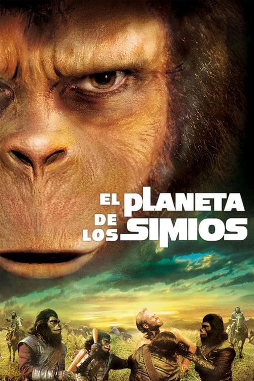

ZI-FI
2001: Odisea en el espacio
2 ordu eta 22 minutu
Zinemaren historiako zientzia-fikziozko film nagusiak gizateriaren historiako aldiak kontatzen ditu, ez bakarrik iraganekoak, baita etorkizunekoak ere. Duela milioika urte, homo sapiensa agertu baino lehen, primate batzuek monolito bat aurkitu zuten, adimen handiagoko estadio batera eramaten zituena. Milioika urte geroago, ilargi batean lurperatutako beste monolito batek zientzialarien interesa pizten du.
Autorea: Arthur C. Clarke
La novia de Frankenstein
1 ordu eta 15 minutu
Pretorios doktoreak erronka berri bat proposatzen dio Frankenstein doktore ezagunari: emakume bat sortzea, esperimentu berri horren emaitzak munstroaren haserrea are gehiago piztuko lukeela imajinatu gabe.
Autorea: James Whale
El planeta de los simios
1 ordu eta 55 minutu
George Taylor espaziontzi bateko tripulazioko kidea da, planeta ezezagun eta itxuraz bizitza adimendunik gabeko batean murgilduko den iraupen luzeko misio batean. Hala ere, laster konturatuko da buruz oso garatuak diren tximinoen arraza batek gobernatzen duela, komunikatzeko gai ez diren gizakiak esklabo bihurtzen dituena. Bere liderrak, Zaius doktoreak, Taylorrek hitzaren dohaina duela jakiten duenean, kentzea erabakitzen du.
Autorea: Pierre Boulle
Alien, el octavo pasajero

1 ordu eta 57 minutu
Nostromo ontzi espazialeko tripulazioak sorospen-seinale bati erantzuten dio eta, jakin gabe, bizitza estralurtar hilgarri bat igotzen du.
Autorea: Dan O'Bannon, Ronald Shusett